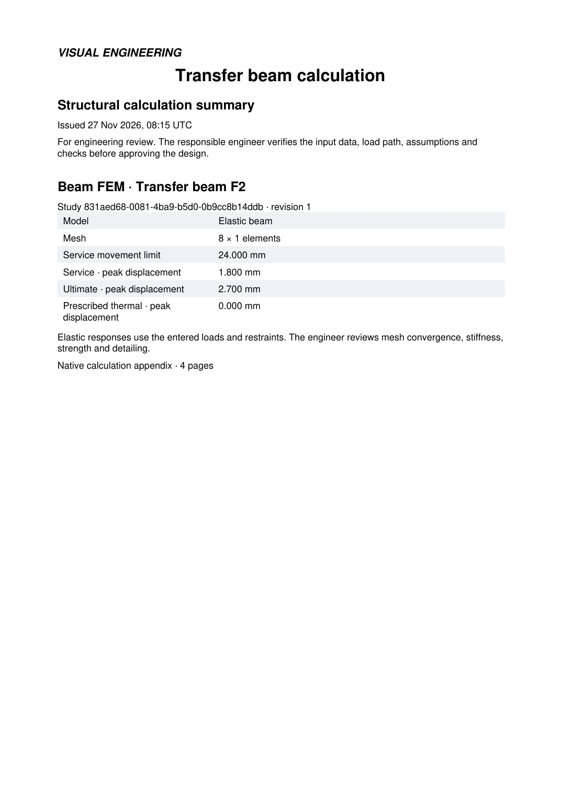

Transfer beam FEM calculation
The worked example uses a simply supported 6 m rectangular beam, 300 mm wide and 500 mm deep, with an elastic modulus of 30,000 MPa. The total uniform loads are 10 kN/m at service and 15 kN/m at ultimate.
The peak elastic displacements are 1.800 mm and 2.700 mm respectively. Follow the issued revision from the project summary to the input values, equilibrium checks and displacement plots. The engineer reviews the adopted stiffness, design actions and strength separately.
Loading the report…
